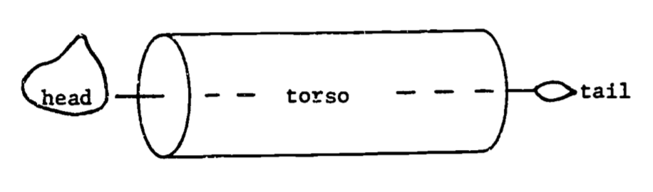
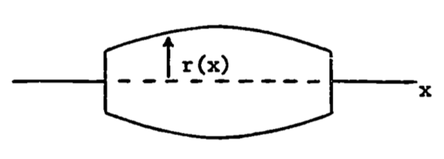
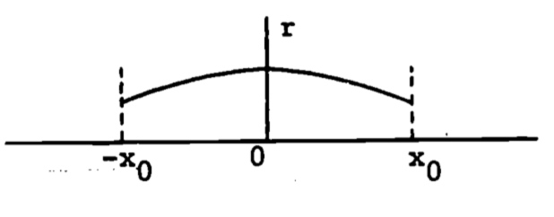
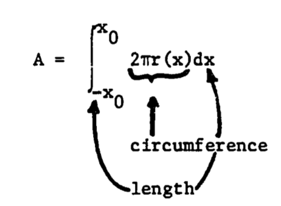
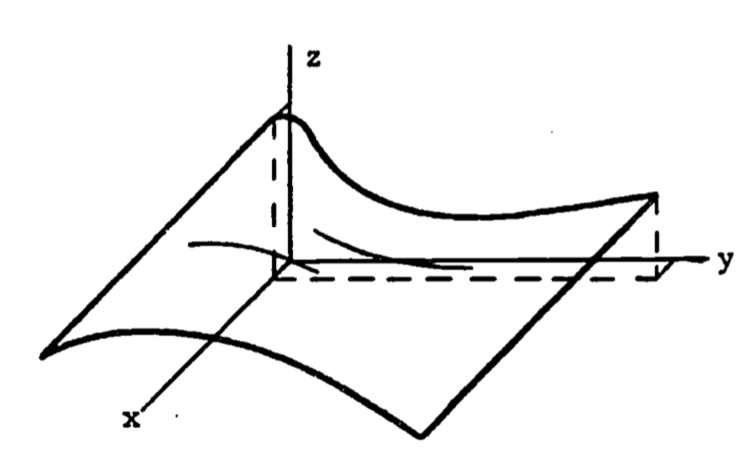

1.6 APPLICATIONS OF DEFINITE INTEGRALS
Direct applications of integrals generally fall into discrete categories in contrast to applications of derivatives which usually are based on slopes. The first group discussed below uses the integral as the accumulation of changes in the function. The second category uses the integral as an area or generalized volume. The last application is more mathematical, although it actually relies on the accumulation concept, and uses the integral to estimate the error in a given approximation.
1.6.1 Accumulation of Changes in the Function
The integral as a total accumulation has been presented before in example 2 on oxygen depletion. This use of the integral is actually fairly intuitive. Let us call our quantity of interest \(F(x)\). Then \(F'(x) = dF/dx\) is certainly the rate of change of \(F(x)\) and \(F(x)\) is certainly the antiderivative of \(F'(x)\). Then integrating the rate of change of \(F\) gives the total change in \(F\).
\[\int^b_a F'(x)dx = F(x)]^b_a = F(b) - F(a)\] Thus the definite integral
\[\int^b_a F'(x)dx\] is the total change in \(F(x)\) as \(x\) changes from \(a\) to \(b\).
1.6.2 Average Change
The average change in \(F(x)\) is then found by dividing by the change in \(x\), since the average is the change in \(F\) per unit change in \(x\). Note that this formula can be shown graphically as the average height of the function. For a given curve, the area under the curve equals the average height multiplied by the width. Thus the average height \(\overline y\) of a curve \(y = f(x)\) is the area \(A\) divided by the width. \[A = \int^b_a f(x)dx = (b-a)\overline y\] \[\overline y = \frac{A}{b-a} = \frac{1}{b-a} \int^b_a f(x)dx\]
Example 5
An interesting example is a study (Fisher 1963 in Warren 1971, pp. 161-163) of the effects of dissolved oxygen content and food ration on the growth rate of Coho salmon. The data appear in figure 1.7. The upper curve is well approximated by
\[\begin{equation} y = 7.3 (x + 3.5) e^{-0.05x} \tag{1.12} \end{equation}\]
The lower curve is the straight line \[y = 28\] here \(y\) = growth rate, \(x\) = dissolved oxygen. A simple comparison of the effect of diet (restricted vs. unrestricted ration) on growth rate is to compare the average growth rates (\(\overline y\)) for the two diets. Since the lower curve has a constant growth rate, we must have \(\overline y = 28\).
Figure 1.7: Relationships between dissolved oxygen concentration and growth rate of juvenile coho salmon when food was unlimited and when it was limited. Arrows indicate growth of fish when held at oxygen concentrations fluctuating diurnally between levels specified. Data of Fisher (1963), in Warren, 1971, p. 162.
\[\begin{align*} \overline y = \frac{1}{27} \int^{30}_3 28dx &= \frac{1}{27}[28x]^{30}_3 = \frac{1}{27}[(28)(30)-(28(3))] \\ &= \frac{1}{27}(28)(27)=28 \\ \end{align*}\]
For the upper curve, \[\begin{align*} \overline y &= \frac{1}{27} \int^{30}_3 7.3(x + 3.5)e^{-0.5x}dx \\ &= \frac{7.3}{27} \int^{30}_3 3.5e^{-0.5x}dx + {\frac{7.3}{27}}\int^{30}_3 xe^{-0.05x}dx \\ &= 0.95 \int^{30}_3 e^{-0.5x}dx + 0.27\int^{30}_3 xe^{-0.05x}dx \\ \end{align*}\]
The first integral is the same form as in previous examples. \[0.95 \int^{30}_3 3.5e^{-0.5x}dx = 0.95[-\frac{1}{0.05} e^{-.05x}]^{30}_3\] \[= 19(-e^{-0.05(30)}+e^{-0.05(3)}) =12.07\]
Rather than finding the second integral in tables, we will evaluate it using integration by parts.
With \(dv(x)\) representing the differential of \(v(x)\), the second integral can be written \[\int^{30}_3 xe^{-0.05x}dx = \int^{30}_3 u(x)dv(x)\] where \(u(x) = x, dv(x) = e^{-0.05x}dx\).
Recall that integration by parts uses the formula \[\int udv = uv - \int vdu\] Since \(du = dx\), and \(v = \int dv = -e^{-0.05x}/0.05\), we get
\[\begin{align*} \int^{30}_3 xe^{-0.05x}dx &= [{\frac{-xe^{-0.05x}}{0.05}}]^{30}_3 - \int^{30}_3 \frac{-e^{-0.05x}}{0.05}dx \\ &= \frac{1}{0.05} \bigg([-30e^{-1.5}+3e^{-0.15}]-[{\frac {e^{-0.05x}}{0.05}}]^{30}_3\bigg) \\ &= 20[-30e^{-1.5}+3e^{-0.15} + \frac{e^{-0.15}}{0.05} - \frac{e^{-1.5}}{0.05}] \\ &= 173.04 \\ \end{align*}\]
Thus, \[\overline y = 12.07 + 0.27(173.04) = 58.8\] In summary, we have the averages:
| ration | average growth rate |
|---|---|
| restricted | 29.3 |
| unrestricted | 58.8 |
It is somewhat surprising that the average unrestricted ration rate is over twice that of the rate for the restricted ration. The data is deceptive visually due to the close values near \(x = 3 mg/l\) and the distorted logarithmic scale.
1.6.3 Distance
Velocity is defined as the rate of change of position. Since the distance covered is the total change in position, it must equal the integral of the velocity.
For a free-falling object, the velocity is given by \(v(t) = g \cdot t\) where \(g\) is the acceleration due to gravity and \(t\) is time elapsed. The distance \(S\) covered after \(T\) seconds is given by \(S = \frac{1}{2} gT^2\) which is merely the integral of velocity.
\[\begin{align*} S &= \int^T_0 v(t)dt = \int^T_0 (gt)dt \\ &= g \int^T_0 t \, dt = g[t^2/2]^T_0 \\ &= \frac{1}{2}gT^2 \\ \end{align*}\]
1.6.4 Volumes
Volumes and areas of complicated regions are also evaluated using the definite integral. Previously, the area under a curve was bounded by three straight perpendicular lines. When the bottom is not the base axis, the integration is still simple. For a region shown in figure 1.8 the area is the difference between the area under curve \(f\) and the area under curve \(g\). Thus
\[\begin{align*} A &= \int^b_a f(x)dx - \int^b_a g(x)dx \\ &= \int^a_b [f(x)-g(x)]dx \\ \end{align*}\]
Note that \([f(x)-g(x)]\) is merely the height of the region at the point \(x\), so the height times width interpretation is still applicable.
Figure 1.8: Area between two curves.
1.6.5 Surface Area of Revolution
When the region is not planar, the evaluation of its area must take into account the changes in the third dimension. If the surface is obtained by revolving a curve around a straight line, the evaluation needs only a single integral. The following example illustrates the method.
Example 6
One study of temperature regulation in mammals requires knowledge of the surface area exposed to the sun. The model views the torso of the animal as symmetric with respect to a longitudinal axis. Each vertical cross-section is then a circle. The simplest such approximation is a cylinder: 
The cylinder can be described by revolving a straight line around the axis, as in figure 1.9.
Figure 1.9: Surface area of revolution: a cylinder.
Unrolling the surface gives a rectangle whose width equals the circumference of the circular end face of the cylinder. This surface area of revolution equals the line length multiplied by the width, thus \(A=2\pi r\:l\) (fig. 1.10)
Figure 1.10: Surface of unrolled cylinder.
As with the area under a curve, the general formula for a surface area of revolution must be intuitive, i.e., must visually appear as length times circumference. Let the torso have a profile of varying radius:

Assume the line to be revolved is graphed as follows,

and is represented by \(r = a - bx^2\), \(a\) and \(b\) positive constants. The radius then changes with \(x\), and the integral must be used: 
In this example, let \(x_0 = 0.5m\), \(a = 0.28\), \(b = 0.24\). The total surface area is
\[\begin{align*} A &= \int^{0.5}_{-0.5} 2 \pi(0.28-0.24x^2)dx \\ &= 2 \pi [0.28x - \frac{0.24}{3} x^3]^{0.5}_{-0.5} \\ &= 1.63 m^2 \\ \end{align*}\]
Note that any function will work in the formula, as long as the area desired is a surface area of revolution. The only problem might be in using a function which is difficult to integrate.
1.6.6 Volume of Revolution
The volume of a solid generated by revolving a curve around an axis can be derived as an intuitive extension of the surface area of revolution. The area and volume formulae for the cylinder and the general revolved solid (figure 1.11) are seen to be analogous.
| Cylinder | Revolved solid | |
|---|---|---|
| Surface area | \(2\pi r^2 l\) | \(\int^l_0 2\pi f(y)dy\) |
| Volume | \(\pi r^2 l\) | \(\int^l_0 \pi[f(y)]^2 dy\) |
Figure 1.11: Solids of revolution.
Now we develop the general volume formula by expressing the integral as a limit of sums of pieces of the solid. Consider a curve \(z = f(y)\) and the region \(R\) under the curve (figure 1.12). We revolve the region \(R\) around the y-axis (figure 1.13) to obtain the solid.
Figure 1.12: The function f(y).
Figure 1.13: The solid obtained by revolving f(y).
Suppose we divide the interval \([a,b]\) into many subintervals, each of width \(dy\). Then, if \(dy\) is sufficiently small, the area of the subregion \(R_i\) is well approximated by a rectangle of width \(dy\) and height \(f(y_i)\), as figure 1.14 indicates. By revolving \(R_i\) about the y-axis, we sweep out a circular slab with radius \(f(y_i)\) and thickness \(dy\) (figure 1.15).
Figure 1.14: The area increment dy.
Figure 1.15: The volume element obtained by revolving dy.
The volume of each slab is \(\pi (radius)^2(length) = \pi f(y_i)^2dy\). Thus we have volume \(V\) of the solid as
\[\begin{align*} V &= \lim_{dy \rightarrow 0} \sum^N_{i=1} \pi f(y_i)^2dy, \;\;\;\;\;\; N= (b-a)/dy \\ &= \int^b_a \pi f(y)^2 dy \\ \end{align*}\]
1.6.7 General Surface Areas
When the surface is more irregular and is not axially symmetric, its area can still be found. The surface must now, however, be described by a three dimensional function which gives the height as a function of the length and width coordinate: \(z = f(x,y)\).

The dependence on two variables requires two integrals, and the method used is called double integration.
Given a function of two variables, say \(z = f(x,y)\), we can write a double integral of \(z\) over a region \(R\) as: \[F = \int_R \int f(x,y)dA \] with \(A\) representing the area coordinates from the region \(R\). This integral is more often evaluated by writing it as an iterated double integral:
\[F = \int^b_a \int^{h(x)}_{g(x)} f(x,y) dy dx = \int^b_a \bigg[ \int^{h(x)}_{g(x)} f(x,y)dy \bigg] dx\]
Evaluation of the “inner” integral yields a function of \(x\), which becomes the integrand of the “outer” integral.1
When the surface is described by \(z = f(x,y)\), its area is found using an iterated integral. The limits of integration are found by projecting the boundary of the surface onto the x,y plane. The formula for the surface area is2 \[A = \int^b_a \int^{h(x)}_{g(x)} [1 + (\frac{\partial z}{\partial x})^2 +(\frac{\partial z}{\partial y})^2]^{\frac{1}{2}} dy dx \]
and is best illustrated by example.
Example 7
If the animal is again considered to look like a cylinder, one improvement would be to account for the neck rising at an angle from the shoulder. To keep the calculations simple, we assume the neck rises vertically, and is also cylindrical (figure 1.16).
Figure 1.16: Half of the upper surface.
We determine the area of the torso by subtracting the “back” area inside the vertical cylinder, \(A\), from the area of the horizontal cylinder, which we found was \(0.25 \pi\). The equation for the “back” surface is \(x^2 + z^2 = (0.25)^2\). The vertical cylinder is defined by \(x^2 + y^2 = (0.10)^2\). The projection is then half a circle of radius 0.10 (figure 1.17), and is given by \(y = \sqrt {0.10^x - x^2}\).
Figure 1.17: Projection of the “neck” region.
For a given \(x\), \(y\) varies from 0 up to \(\sqrt {0.10^x - x^2}\) . The limits on \(x\) are -0.10 to 0.10. The equation for the surface of the back yields the required partial derivatives: \[ \frac{\partial z}{\partial x} = - \frac{x}{\sqrt{0.25^2 - x^2}},\;\;\; \frac{\partial z}{\partial y} = 0 \] \[A = \int^{0.10}_{-0.10} \int^{\sqrt{0.10^2-x^2}}_0 [1 + \frac{x^2}{0.25^2 - x^2} + 0] dy \, dx\] This strange formula still has visual intuitive appeal since the limits on \(y\) are obtained from the width in the \(y\) direction (for a given \(x\)) and the limits on \(x\) are from the length in the \(x\) direction. The quantity in brackets accounts for the changing height of the surface. The remaining parts of the problem are left as an exercise.
1.6.8 Error Estimation
The integral can be used to develop approximate solutions to certain equations or approximate models of given data. The integral provides a qualitative error estimate for the approximation. The most well known application is the least squares fit of a line through a set of data points. One of the most recent applications is the residual norm as an error indicator for approximate solutions to partial differential equations. In each example discussed below, a function is integrated over a domain of interest. If this function represents the difference between the approximate and true solution, then the value of the integral decreases as the approximation improves. The integral is then minimized to provide the “best” approximation.
1.6.8.1 Least Squares
Many experiments produce data as pairs of numbers \[(x_1,y_1),(x_2,y_2), \ldots, (x_n,y_n)\] The underlying relationship is often assumed to be linear, that is, the model is assumed to be \[y = Ax + B, \text{ where }A,B = \text{constants}\] The points (\(x_i,y_i\)) are usually not collinear (see figure 1.18) due to experimental error, inaccuracies in the model, round-off error during measurement, etc. Thus the problem is to choose the constants \(A,B\) so the line matches the data points as closely as possible. The method of least squares uses the sum of squared deviations for the error function, \(E^2\) (see figure 1.18):
\[\begin{equation} E^2 = \sum^n_{i=1} [y(x_i)-y_i]^2 \tag{1.13} \end{equation}\]
where \(y(x_i) = Ax_i + B\). The goal is then to choose \(A\), \(B\) so that \(E^2\) is minimal. By writing \(E^2\) as a function of the parameters \(A\), \(B\), we minimize \(E^2\) by setting the partial derivatives equal to zero: \[\frac{\partial E^2}{\partial A} = 0,\;\; \frac{\partial E^2}{\partial B} = 0\]
Figure 1.18: Least-squares line.
We then obtain two linear equations in \(A\), \(B\) which are easily solved (see problem 5) and can be shown to give the line with the least sum of squared deviations (see problem 6).
1.6.8.2 Norms
The squared deviation used in the least squares method is an example of a norm. A norm of a function \(f(x)\), denoted \(\|f(x)\|\), is a function (Pearson 1974, p. 946) such that, for any scalar \(\alpha\), and any functions \(f(x), g(x)\), \[\|f(x)\| \ge 0\] \[\|f(x)\| = 0\] if and only if \(f(x) = 0\) \[\| f (x) \| = |\alpha| \cdot \| f (x) \|\] \[\| f (x) + g(x) \| \le \| f (x) \| + \|g(x) \| \]
When a curve \(y = f(x)\) is approximated by a least-squares straight line \(y = Ax + B\) over the interval \([a,b]\), we choose \(A\), \(B\) to minimize the error norm \(E\) defined by
\[\begin{equation} E^2 = \int^b_a [Ax + B - f(x)]^2 dx \tag{1.14} \end{equation}\]
Note that equation (1.13) is a discrete analog of equation (1.14).
The norm can be used for evaluating the closeness of fit of one curve to another, or for obtaining a qualitative estimate of the accuracy of an approximate solution to an equation. The \(L_p\) norm of a function \(f(x)\) is defined as \[L_p (f(x)) = \| f(x)\|_\rho = \bigg[\int^b_a |f(x)|^P dx\bigg]^{1/p} \]
The least squares norm \(E\) is in fact \(L_2 (f(x))\), since \[\| f(x) \|_2 = \bigg[ \int^b_a |f(x)|^2 dx\bigg]^{1/2}\] and thus \[E^2 = [\|f(x)\|_2]^2 = [L_2(f(x))]^2\]
Example 8
An interesting comparison is between the line fitted to the data points of example 5 and the line fitted to the smooth exponential curve of eqn. (1.12), rewritten as follows.
\[\begin{equation} y_1 = 7.3 (x + 3.5) e^{-0.05x} \tag{1.15} \end{equation}\]
We can approximate this function with a linear function,
\[\begin{equation} y_2 = Ax + B \tag{1.16} \end{equation}\]
by choosing \(A\) and \(B\) to minimize the \(L_2\) (least squares) norm of the difference between them, \(y_1 - y_2\). Denote the norm by \[E = \|y_1 - y_2\|_2 = [\int^{30}_3 (y_1-y_2) dx]^{1/2}\] Substituting eqns. (1.15) and (1.16) yields
\[\begin{equation} E = [\int^{30}_{3} (7.3[x+3.5]e^{-0.05x} - Ax - B)^2dx]^{1/2} \tag{1.17} \end{equation}\]
We now minimize \(E\) by taking partial derivatives with respect to \(A\) and \(B\) (see Hertzberg 1977 for a review of differentiation). One first derivative will now be calculated, with the remainder of the minimization left as computer exercise 2.
First, note that the minimum of \(E\) occurs at the same values of \(A\) and \(B\) which minimize \(E_2\), since \(E\) is positive. The derivative of \(E_2\) with respect to \(A\) is now attempted. First, we write \[\frac{\partial(E^2)}{\partial A} = \frac{\partial}{\partial A} \bigg[ \int^{30}_3 f(A,B,x)dx\bigg] \] where \[ f(A,B,x) = (7.3[x+3.5]e^{-0.05x}-Ax - B)^2\] Then the derivative is calculated after the integration is completed, which is not a simple task. It may be easier to differentiate under the integral sign first, and then integrate the result.
Theorem (Pearson 1974, p. 100).
Let \(f(x,y)\) be an integrable function of \(x\) for each \(y\), and let \(\partial f / \partial y\) be continuous over \(a \le x \le b, c \le y \le d\). Then \[\frac{d}{dy} \int^b_a f(x,y)dx = \int^b_a (\partial f / \partial y)dx\]
Thus we evaluate:
\[\begin{equation} \frac{\partial (E^2)}{\partial A} = \int^{30}_3 \frac{\partial f}{\partial A} dx \\ = \int^{30}_3 2(7.3[x+3.5]e^{-0.05x}-Ax-B)(-x)dx \tag{1.18} \end{equation}\]
which can now be integrated (computer exercise 2).
No justification has yet been given for the constants in eqn. (1.15). These, too, may be determined by a least squares norm. See computer exercise 1 for details.
The norm can also be used to estimate qualitatively the relative accuracies of approximate solutions to a differential equation. The limits are determined as above by the interval in which the accuracy is to be judged. An example is presented in the next section.